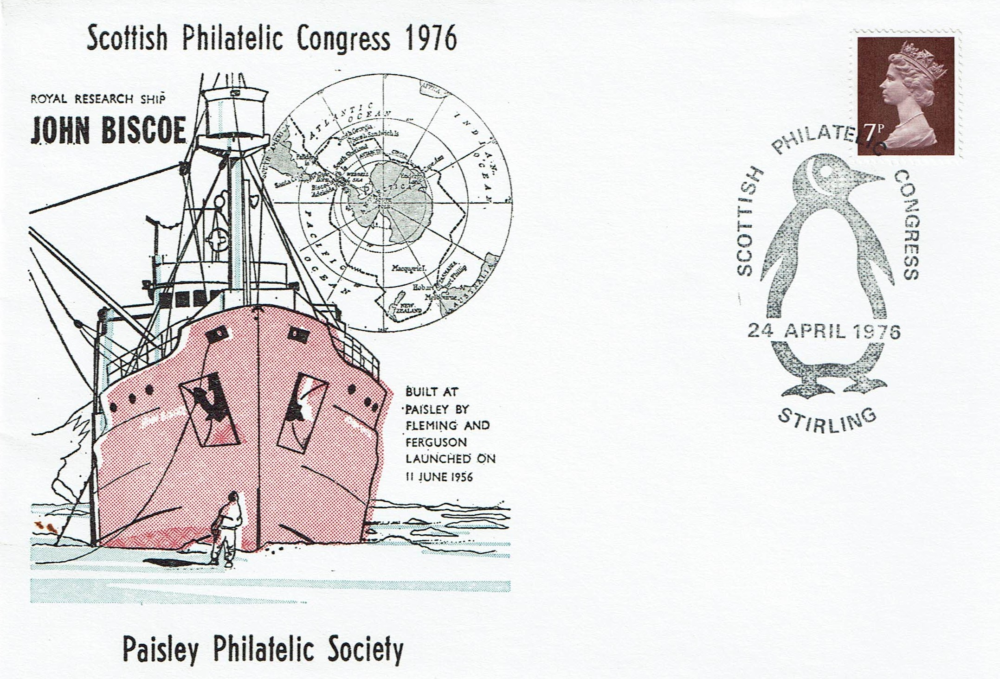
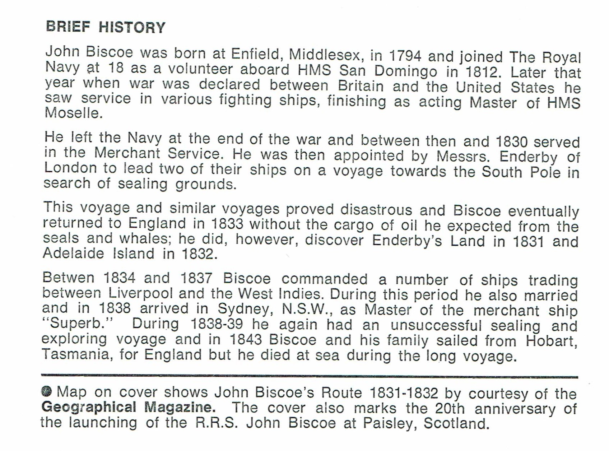
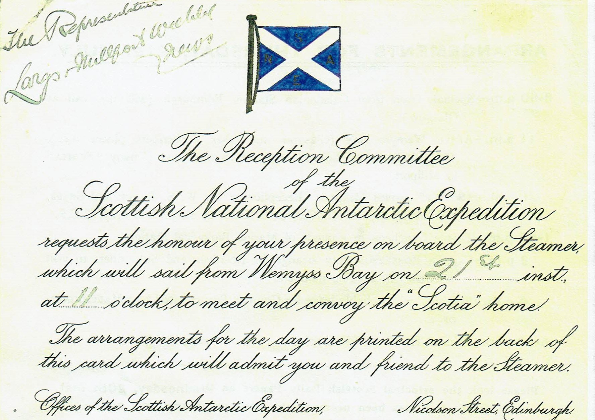
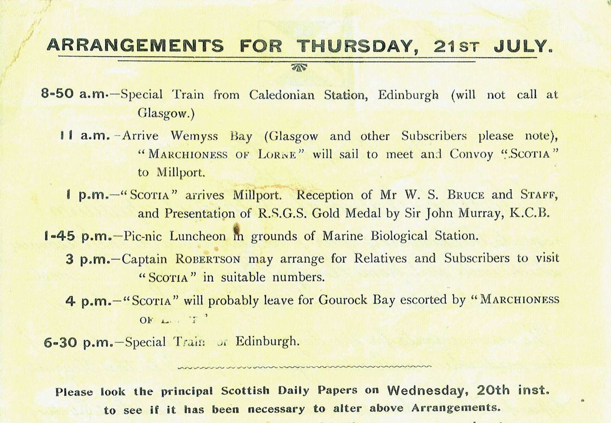
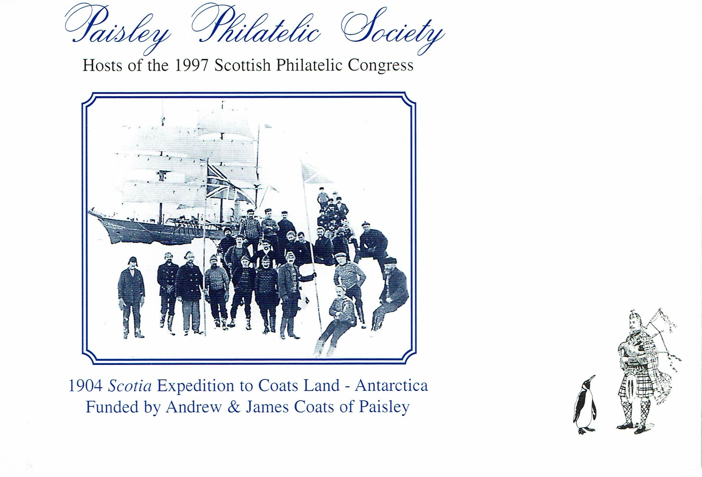
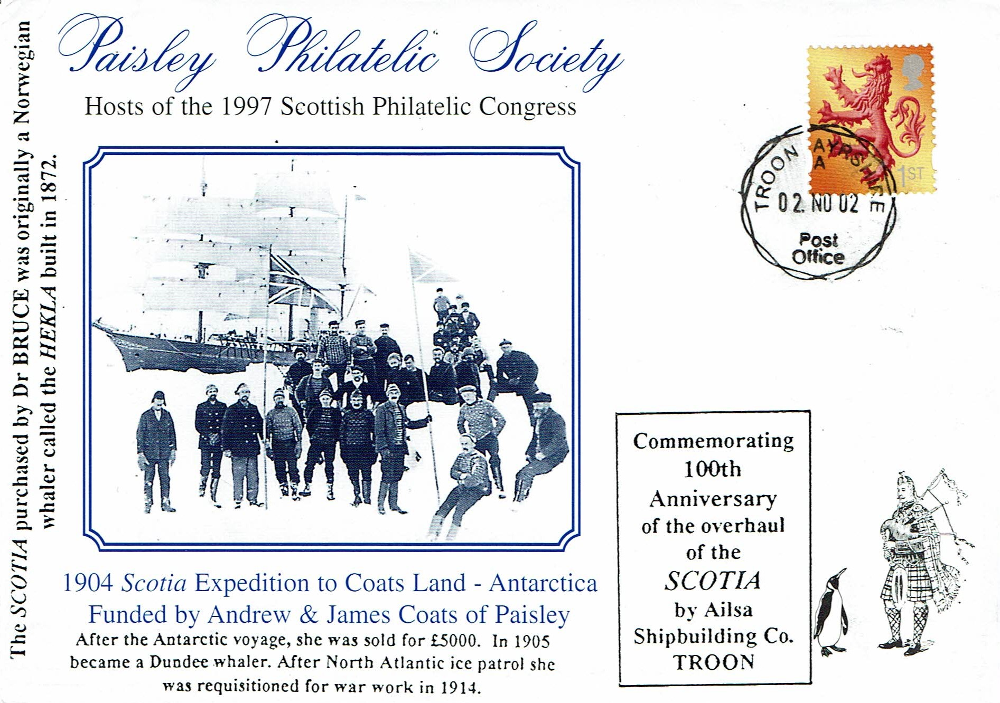
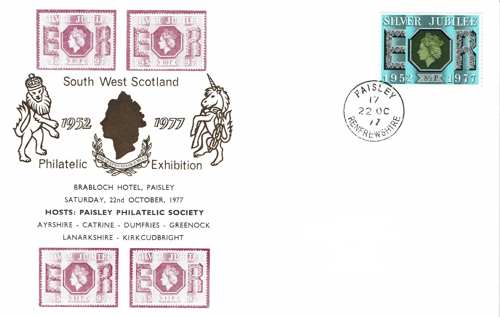

Congress Covers and "The Scotia"
The Society is an active member of The Association of Scottish Philatelic Societies (ASPS). In 1967 and 1976, under the Presidencies of Mr J.S. Donaldson, well known as a collector of London Postmarks and Mr A.B.McMillan, whose collection of Arctic and Antarctica was renowned, the Society was hosts to the Annual Congress held at Stirling University. Special Covers were designed for the latter occasion, serviced with a special commemorative cancellation by the Post Office. These covers featured the R.R.S. John Biscoe, a survey ship built by Fleming and Ferguson of Paisley for the British Antarctic Survey. The cover was designed by Peter Westwood.
 
In 1997, in the 50th anniversary year of the Society, Congress was again hosted by Paisley Philatelic Society. The late Mr Alan Lacey, a well known collector of German Philately with renowned collections of Durer and Nurnberg, was President of the Society; whilst Mr R Barclay, a member of the Society also, was President of ASPS at the same time. Congress was held in Falkirk Town Hall at the time and a special commemorative cover was again designed by Peter Westwood (shown below). The cover featured the 1904 Scotia expedition to Coats Land in Antarctica and the scans of the invite card to welcome the Scotia home on 21st July 1904 are shown below. The reception was held at the A formal reception for 400 people was held at the Marine Biological Station, Millport and 400 people were invited.
 
The Congress cover shows the famous illustration of Gilbert Kerr playing the pipes to a penguin.

The cover was also endorsed for the centenary of the overhaul of the Scotia by Ailsa Shipbuilding Co. in Troon. The date of 2nd November 1902 was actually the date of her sailing off to the Antarctic.

Since the first Annual Congress of the South West of Scotland Philatelic Societies in 1963, Paisley Philatelic Society has been represented each year and has hosted on a number of occasions. South West Congress (now renamed as a Stamp and Postcard Fair) has now settled in to a regular venue at Prestwick Community Centre in early October of each year and a number of stamp and postcard dealers attend to sell their wares. SW Congress in 1977 was hosted by Paisley Philatelic Society and a card commemorating the Silver Jubilee of Queen Elizabeth II was produced.
